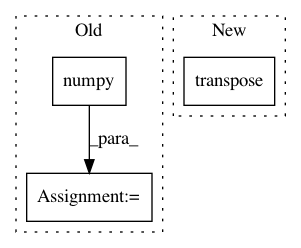

055caff00ce0b411c26a3d37ccc538a5f3f47ab9,nussl/separation/deep/deep_clustering.py,DeepClustering,extract_features,#DeepClustering#,83
Before Change
embedding = embedding.squeeze(-2)
embedding = embedding.permute(2, 1, 0, 3)
embedding = embedding.reshape(-1, embedding_size)
embedding = embedding.data.cpu().numpy()
return embedding
def make_audio_signals(self):
signals = super().make_audio_signals()
After Change
// swap back batch and sample dims
if self.metadata["num_channels"] == 1:
embedding = embedding.transpose(0, -2)
embedding = embedding.squeeze(0).transpose(0, 1)
return embedding.cpu().data.numpy()
In pattern: SUPERPATTERN
Frequency: 3
Non-data size: 3
Instances
Project Name: interactiveaudiolab/nussl
Commit Name: 055caff00ce0b411c26a3d37ccc538a5f3f47ab9
Time: 2020-03-11
Author: prem@u.northwestern.edu
File Name: nussl/separation/deep/deep_clustering.py
Class Name: DeepClustering
Method Name: extract_features
Project Name: hassony2/kinetics_i3d_pytorch
Commit Name: 1f3da600c20e3376b0bb396bba482b1e90b7883c
Time: 2017-11-24
Author: yana.hasson@inria.fr
File Name: i3nception_tf.py
Class Name:
Method Name:
Project Name: interactiveaudiolab/nussl
Commit Name: 2ffbfa3a6bd3b8de8e21a762489346054dcd9ccc
Time: 2020-03-12
Author: prem@u.northwestern.edu
File Name: nussl/separation/deep/deep_mask_estimation.py
Class Name: DeepMaskEstimation
Method Name: extract_features